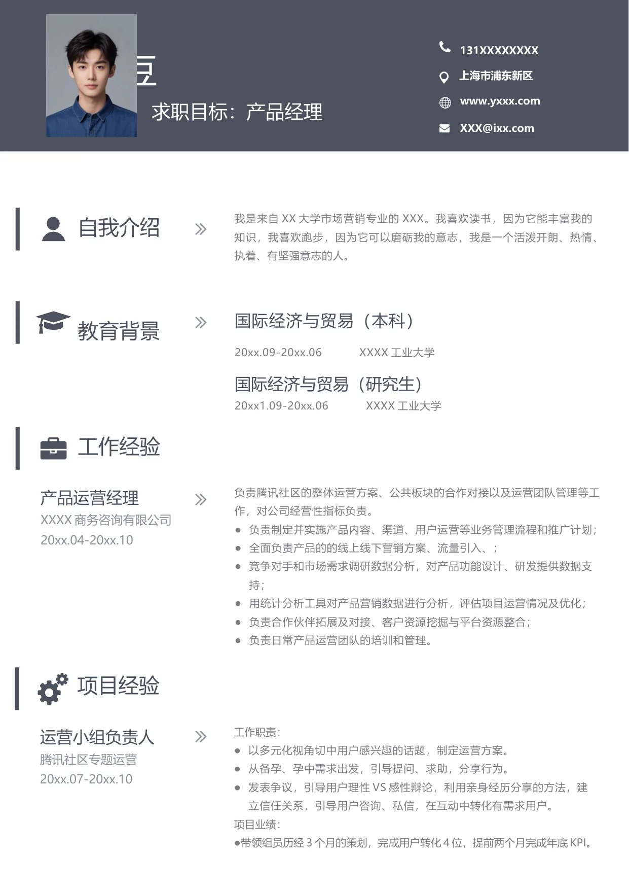

胡小豆
求职目标：产品经理
131XXXXXXXX
上海市浦东新区
www.yxxx.com
XXX@ixx.com
自我介绍
我是来自XX 大学市场营销专业的XXX。我喜欢读书，因为它能丰富我的
知识，我喜欢跑步，因为它可以磨砺我的意志，我是一个活泼开朗、热情、
执着、有坚强意志的人。
教育背景
国际经济与贸易（本科）
20xx.09-20xx.06
XXXX 工业大学
国际经济与贸易（研究生）
20xx1.09-20xx.06
XXXX 工业大学
工作经验
产品运营经理
XXXX 商务咨询有限公司
20xx.04-20xx.10
项目经验
负责腾讯社区的整体运营方案、公共板块的合作对接以及运营团队管理等工
作，对公司经营性指标负责。
●负责制定并实施产品内容、渠道、用户运营等业务管理流程和推广计划；
●全面负责产品的的线上线下营销方案、流量引入、；
●竞争对手和市场需求调研数据分析，对产品功能设计、研发提供数据支
持；
●用统计分析工具对产品营销数据进行分析，评估项目运营情况及优化；
●负责合作伙伴拓展及对接、客户资源挖掘与平台资源整合；
●负责日常产品运营团队的培训和管理。
运营小组负责人
腾讯社区专题运营
20xx.07-20xx.10
工作职责：
●以多元化视角切中用户感兴趣的话题，制定运营方案。
●从备孕、孕中需求出发，引导提问、求助，分享行为。
●发表争议，引导用户理性VS 感性辩论，利用亲身经历分享的方法，建
立信任关系，引导用户咨询、私信，在互动中转化有需求用户。
项目业绩：
●带领组员历经3 个月的策划，完成用户转化4 位，提前两个月完成年底KPI。